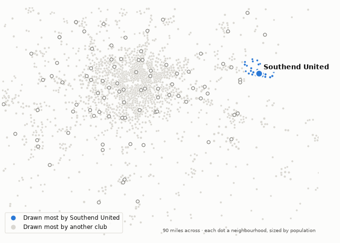
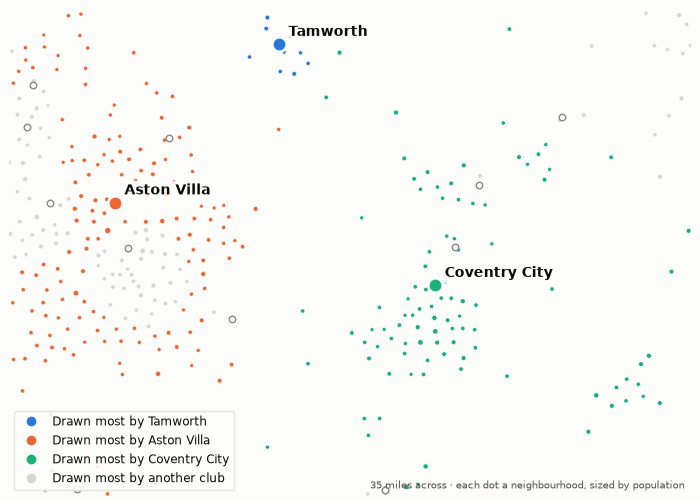

Whose people this week's clubs are playing for. 30 September 2026.
136,000 people live nearer to Eastleigh's ground than to any other. Eastleigh draw 33% of them; Southend United draw 0%. The next biggest draws are Southampton (38%), Portsmouth (6%) and Bournemouth (4%).
282,000 people live nearer to Southend United's ground than to any other. Southend United draw 44% of them; Eastleigh draw 0%. The next biggest draws are Tottenham Hotspur (4%), Arsenal (4%) and Crystal Palace (4%).
They meet on Wednesday. On the map, each neighbourhood takes the colour of the club that draws most of it.

The model gives Tamworth 81,000 people to draw on, the 103rd largest market of the 112 clubs in the top five divisions. They sit 110th in the pyramid: 22nd in the National League.
On their own doorstep, 147,000 people, they draw 34%. The next biggest draws are Aston Villa (17%), Coventry City (11%) and Birmingham City (5%).
They play Sutton at home on Wednesday.

Modelled, not counted. A club's doorstep is the neighbourhoods nearer its ground than any other; every neighbourhood's people are split across all clubs by distance and division, as the divisions stand today. How catchment is measured.
Built from the English football database, tiers 1–5 from 1958/59. Results from football-data.co.uk. Archived copy.